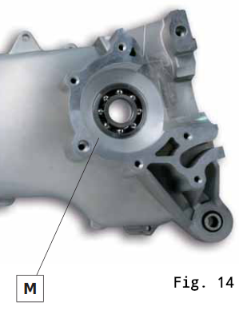

PREPARAZIONE CARTER
1. Lavare con benzina e soffiare con aria compressa tutti i componenti, specialmente i condotti
2. Montare A e B (se freno a tamburo) (fig. 1 e 2)
3. Montare C (fig. 3)
4. Montare Y e W (fig. 4). W qui se senza pompa di benzina (fig. 5), se invece si monta la pompa benzina inserire W nel foro X fatto con una punta da diametro di 4.5mm
MONTAGGIO ALBERO MOTORE
5. Scaldare sedi cuscinetto carter a 130°-140° (fig. 7)
6. Inserire i cuscinetti a mano e assicurarsi che siano a battuta inserendo in ordine D-E-F e G nel suo alloggiamento (fig. 8 e 9)
7. Montare cuscinetti albero motore
(n.b. L’anello esterno ridotto dev’essere rivolto verso l’albero motore in entrambi i carter) (fig. 10)
7.1. Pulire le sedi dei cuscinetti altro carter e scaldare a 130°-140° (fig. 11 e 12)
7.2. Inserire i cuscinetti ed assicurarsi che siano a battuta (fig. 13 e 14)
7.3. Prima che i carter si raffreddino, raffreddare con spray congelatore l’estremità dell’albero motore e inserirlo nel cuscinetto del carter piccolo (fig. 15 e 16)

7.4. Applicare uno strato sottile ed uniforme di pasta per guarnizione tipo Loctite blu 5926 nel carter grande e inserire l’altra estremità dell’albero motore nel cuscinetto del carter
(n.b. se l’albero motore non entra perfettamente non spingerlo con martello o altro, ma tirarlo dall’altro lato usando un distanziale e avvitando) (fig. 17)
7.5. Chiudere i due carter con le viti serrandole in senso incrociato (12 Nm – 1.2 kgm)
7.6. Rimuovere la pasta siliconica in eccesso e verificare che l’albero motore sia centrato con uno spessimetro tra l’albero motore e cuscinetti.
Controllare il gioco assiale (gioco assiale 0,05/0,08 mm a motore freddo) (fig. 18)
8. Montare gli anelli di tenuta banco (paraolii)
9. Lubrificare con olio motore la parete esterna dell’anello e mandarlo in sede con il lato della molla rivolta verso l’interno, senza deformarlo e mantenendo quest’ultima bene inserita
MONTAGGIO COLLETTORE
10. Non utilizzare oggetti appuntiti che potrebbero danneggiare il manicotto. Piuttosto scaldarlo ad una temperatura di 50°-60° (fig. 19)

11. Inserire la valvola lamellare e montare il collettore con le relativi viti di serraggio. (10-11 Nm, 1.0-1.1 kgm)
Strumenti:
- Chiave dinamometrica
- Phon termico
- Spray congelatore
- Pasta per guarnizione tipo Loctite Blu silicone 5926
- Olio motore
- Comparatore con base magnetica
- Spina (opzionale)
- Spessimetro (opzionale)
- Spina cilindrica (opzionale)
Dati di montaggio:
- Coppia serraggio viti M6 carter ingranaggi: 12 Nm (1.2 kgm)
- Coppia serraggio viti M6 coperchio carter avviamento: 10-11 Nm (1.0-1.1 kgm)
- Coppia serraggio viti M6 prigionieri cilindro: 12 Nm (1.2 kgm)
- Capacità totale olio ingranaggi: 100cc